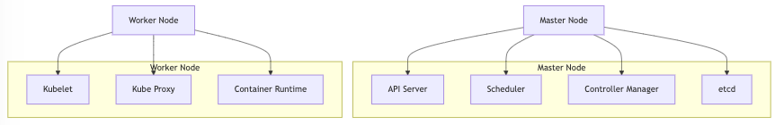

어느정도 개발공부를 한 사람이라면 Kubernetes(쿠버네티스)를 최소 한 번 이상은 접해봤을 것이다.
유명하다면 모두가 써봤다는 얘기고, 그말은 즉슨 무조건 공부를 해야하는 것이기 때문에(…) 오늘 날을 잡아서 개념 및 명령어를 한 번 정리해봤다.
1. Kubernetes란?
쿠버네티스는 컨테이너화된 애플리케이션의 배포, 스케일링, 운영을 자동화하기 위한 오픈소스이다. 즉 무료로 이용할 수 있는 프로그램이다.
이름이 긴탓에 줄여서 k8s라고 하며, Google에서 개발했으나 현재 CNCF(Cloud Native Computing Foundation)에서 repo를 관리하고 있다.
복잡한 컨테이너 환경에서 애플리케이션이 안정적으로 동작하도록 돕는 컨테이너 오케스트레이션 도구이다.
2. Kubernetes의 주요 역할
- 여러 컨테이너를 효과적으로 배포 및 관리
- Auto Scaling: 애플리케이션의 사용량에 따라 컨테이너 수를 자동으로 늘리거나 줄임
- Self-Healing: 문제가 발생한 컨테이너를 자동으로 재시작 및 복구
- Load Balancing 및 트래픽 분배 -> 시스템 과부화 방지
- 배포 자동화: rolling update같은 방식으로 중단 없이 배포 진행
3. Kubernetes의 주요 구성 요소

Master Node
클러스터 제어 및 관리를 담당하는 중앙 서버
- API Server: 클러스터 진입점으로
kubectl명령어를 처리 - Scheduler: 컨테이너를 어떤 노드에서 실행할지 결정
- Controller Manager: 리소스 상태를 관리하고 이상 상태를 복구
- etcd: 클러스터 상태 정보를 저장하는 분산 키-값 저장소
Worker Node
실제로 컨테이너가 실행되는 노드
- Kubelet: Master Node의 명령을 받아 컨테이너를 실행하고 상태 보고
- Kube Proxy: 네트워킹을 관리하고 서비스 간의 통신 지원
- Container Runtime: 컨테이너 실행 환경 (Docker, containerd 등)
4. Kubernetes의 resource object
1) Pod
- 컨테이너의 최소 단위로, 하나 이상의 컨테이너를 포함
- 같은 Pod 내부의 컨테이너는 네트워크와 스토리지 공유
2) Deployment
- Pod를 정의하고 애플리케이션의 배포 및 업데이트 관리
- 롤링 업데이트, 롤백 기능 지원
3) Service
- Pod의 네트워크 접근을 제어하며, 외부 트래픽을 내부 Pod로 전달
- ClusterIP, NodePort, LoadBalancer 등
4) ConfigMap & Secret
- ConfigMap: 환경 설정 데이터 관리
- Secret: 비밀번호, 인증 토큰 같은 민감한 정보를 안전하게 저장
5) Volume
Pod에 영구적인 데이터를 제공하기 위한 스토리지
6) Namespace
- 리소스를 그룹화하여 논리적인 구획을 제공
- default, kube-system 등
5. Kubernetes의 추가 기능
1) Horizontal Pod Autoscaler (HPA)
애플리케이션의 부하에 따라 Pod의 수를 자동으로 늘리거나 줄이는 기능
2) Helm
쿠버네티스 애플리케이션의 패키지 관리자. 반복적인 배포 관리
3) Network Policy
네트워크 트래픽을 제어하여 Pod 간의 통신을 관리
6. Kubernetes의 동작 원리
사용자가 kubectl을 통해 매니페스트(YAML 파일)로 리소스를 정의하고 API Server에 전달
-> API Server가 스케줄러를 통해 적절한 Worker Node를 선택
-> 선택된 Node에서 Kubelet이 컨테이너 런타임(Docker 등)을 사용해 Pod를 생성
-> 네트워킹, 로드 밸런싱, 스케일링 등은 서비스 및 설정에 따라 자동으로 처리

![[AWS] Cloud Practitioner 시험 준비 및 후기](/coverImages/aws.png)